CS184 Assignment 1 Write-Up
Task 1 (20 pts)
- Walk through how you rasterize triangles in your own words.
- For each (x,y) coordinate which represents a pixel of the screen, we translate this point by 0.5 in the x and y direction to get the middle of the pixel.
- Next we perform three line tests on (x+0.5, y+0.5) to indicate whether the pixel center is contained within the three vertices of the triangle.
- Since a line is made up of two half-planes, we can use the Implicit line equation given by Li(x,y) = -(x-Xi)(Yi+1 - Yi)+ (y-Yi)(Xi+1 - Xi) for each intersection of the plane, and check whether it is > 0 which indicates the point is inside, and = 0 which indicates the point is on the border of the triangle (for example, the line that makes up the triangle).
- The first line test is for the plane P0 intersected with the plane P1, so P0 = (x0, y0), P1 = (x1, y1) with the sample point (x+0.5, y +0.5) and line equation L0: -(x-X0)(Y1 - Y0)+ (y-Y0)(X1 - X0)
- The second line test is for the plane P1 intersected with the plane P2, so P1 = (x1, y1), P2 = (x2, y2) with the sample point (x+0.5, y +0.5) and line equation L1:-(x-X1)(Y2 - Y1)+ (y-Y1)(X2 - X1)
- The third line test is for the plane P2 intersected with the plane P0, so P2 = (x2, y2), P0 = (x0, y0) with the sample point (x+0.5, y +0.5) and line equation L2: -(x-X2)(Y0 - Y2)+ (y-Y2)(X0 - X2)
- If the point passes all three line tests, then we can say that the sample point is within the triangle and thus should be colored.
- We repeat the process above to account for the other direction by swapping the planes for each line test. For example for the first line test we had P0 = (x0, y0), P1 = (x1, y1) with the sample point (x+0.5, y+0.5): -(x-X0)(Y1 - Y0)+ (y-Y0)(X1 - X0), but now to handle the rotation we have -(x-X1)(Y0 - Y1)+ (y-Y1)(X0 - X1).
- We repeat this for the second line test for plane P2 intersected with plane P1: -(x-X2)(Y1 - Y2)+ (y-Y2)(X1 - X2) and plane P0 intersected with plane P2: -(x-X0)(Y2 - Y0)+ (y-Y0)(X2 - X0)
- If the point passes all three line tests, then we can say that the sample point is within the triangle and thus should be colored.
- Explain how your algorithm is no worse than one that checks each sample within the bounding box of the triangle.
- Our algorithm is no worse than the one that checks each sample within the bounding box of the triangle because we do just that.
- For example, first we find the left edge of the bounding box by taking the floor of all the x vertices of the triangle.
- Second, we find the right edge of the bounding box by taking the ceiling of all the x vertices of the triangle.
- Third, we find the bottom edge of the bounding box by taking the floor of all the y vertices of the triangle.
- Fourth, we find the top edge of the bounding box by taking the ceiling of all the y vertices of the triangle.
- Then from there, instead of iterating through all pixels which would be from x=0, to x=width-1, y=0 to y=height - 1, for x, we iterate through the pixels with the range x=floor(x_vertices of the triangle) to x = ceiling(x_vertices of the triangle)
- Lastly for y, we iterate through the pixels with the range y=floor(y_vertices of the triangle) to y = ceiling(y_vertices of the triangle)
- Therefore the runtime has decreased since we're not going through all pixels (width * height pixels) but just the pixels within the bounding box.
- Show a png screenshot of basic/test4.svg with the default viewing parameters and with the pixel inspector centered on an interesting part of the scene.
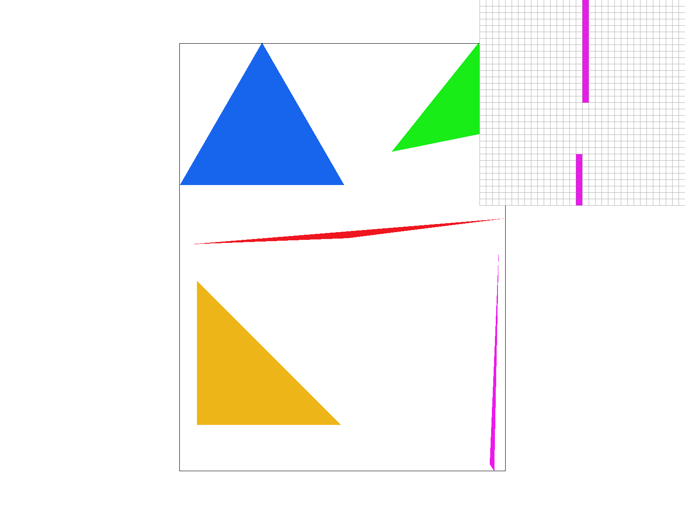
Task 2 (20 pts)
- Walk through your supersampling algorithm and data structures. Why is supersampling useful? What modifications did you make to the rasterization pipeline in the process? Explain how you used supersampling to antialias your triangles.
- We used two main data structures, the first being the rgb_framebuffer_target which is of length 3 * width * height, which stores the RGB pixel representation of the final display.
- The second data structure is the sample_buffer vector of length width * height * sample rate, which stores the Color objects for each supersampled pixel, which is default to an array of white color objects.
- In our supersampling algorithm, we first went pixel by pixel, and then for each pixel we calculated the locations of our supersampled pixels.
- So for each x,y of the display, we had a xk,yk that was per pixel.
- We initialized our xk=x with the condition xk < x + 1, incrementing it by 1/square root of the sample rate, for each iteration.
- We also did the same for the y: yk=y while yk < y + 1, incrementing it by 1/square root of the sample rate, for each iteration.
- By doing this, from 1 pixel, we are able to divide this pixel into sample rate smaller pixels
- However, like sampling the regular pixel, we have to sample the middle of the point.
- Thus for xk and yk, we need to add 1/sample rate to sample the middle of the supersampled pixel.
- Therefore, we get our supersampled pixel xs = xk + 1/sample_rate, and our supersampled pixel ys = yk + 1/sample_rate
- Then we can perform the three line tests for each supersampled pixel (xs,ys), to decide whether the supersampled pixel is contained within or on the border of the triangle.
- The only modification here from the rasterization pipeline process of rasterizing regularly, is that we now use the supersampled point (xs, ys), so we apply the same Implicit line equation given by Li(xs,ys) = -(xs-Xi)(Yi+1 - Yi)+ (ys-Yi)(Xi+1 - Xi) for each intersection of the plane, and check whether it is >= 0.
- The first line test is for the plane P0 intersected with the plane P1, so P0 = (x0, y0), P1 = (x1, y1) with the sample point (xs, ys) and line equation L0
- The second line test is for the plane P1 intersected with the plane P2, so P1 = (x1, y1), P2 = (x2, y2) with the sample point (xs, ys) and line equation L1
- The third line test is for the plane P2 intersected with the plane P0, so P2 = (x2, y2), P0 = (x0, y0) with the sample point (xs, y s) and line equation L2
- If the point passes all three line tests, then we can say that the supersampled point is within the triangle and thus should be colored. We repeat the above for the other direction, swapping the points exact to how we did it for regular rasterization without supersampling.
- However, unlike the regular sampling, for supersampling, we store the color in the sample buffer.
- Therefore, we index into the sample buffer to store it at the right location by doing two calculations.
- First, we want to calculate which block (or original pixel) is the super sampled pixel in. We do this by taking the width * y + x, but since each block (or original pixel) now has sample rate mini-pixels within it, we times the block by the sample rate. Thus (width * y + x) * sample rate
- Now we have the starting location of the block holding the supersampled pixels, thus we add an offset (0 to the sample rate) to place the color of the supersampled pixel in the sample buffer.
- Now that we have all the colors of the supersampled pixels, within resolve_to_framebuffer, we can average down each block of supersampled pixels into one color by aggregating the sum of the r,b,g values of each supersampled pixel in a block (or original pixel).
- Then we can divide these aggregated sums by the sample rate to get the average r value, average b value, and average g value.
- Once we average down, we can store this as a Color object using the Color class constructor.
- Since the rgb_framebuffer_target is an array storing 8 bit values for each of the R,G,B, once we calculated our averaged down color object we just multiplied each floating point value in the color object by 255 and stored the 8-bit value back into the rgb_framebuffer_target.
- We didn’t actually change the calculation of this part from the regular rasterization of the triangle, we just changed the color object to be the averaged down value which we then applied to the same calculation.
- Lastly, we had to make a few edits to fill_pixel because now that we were storing the color objects of the supersampled pixels into the sample_buffer, and then doing some calculation for the rgb_framebuffer_target, the points and line stopped rendering. Thus, we had to edit fill_pixel to accommodate supersampled pixels by applying the same color for all supersamples of a pixel for points and lines, which consist of a for loop from 0 to the sample rate, and filling all supersampled pixels within the same block with the same color.
- Supersampling is useful because we are able to be more precise in the coloring of our triangles, for example, prior we would have more jaggies because if a little bit of the pixel was contained in the triangle we would just color that pixel with full opacity, but now we can color the pixel with the average opacity, thus applying a blurring effect, filtering out high frequencies, and avoiding anti-aliasing.
- Show png screenshots of basic/test4.svg with the default viewing parameters and sample rates 1, 4, and 16 to compare them side-by-side. Position the pixel inspector over an area that showcases the effect dramatically; for example, a very skinny triangle corner. Explain why these results are observed.
- Sample Rate 1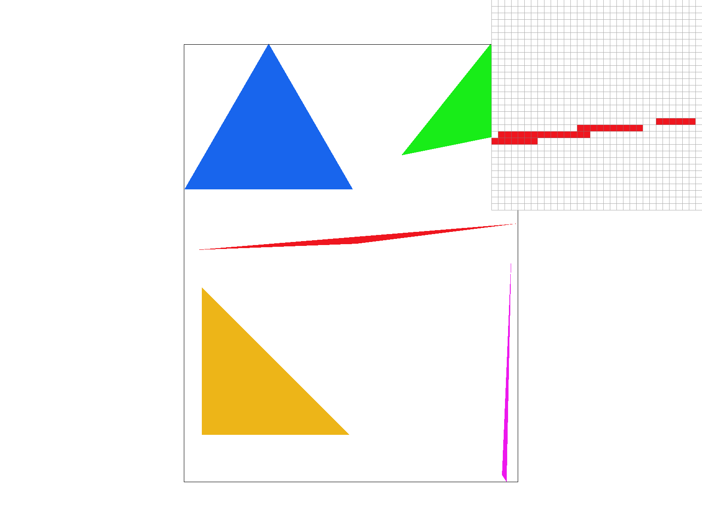
- Sample Rate 4
- Sample Rate 16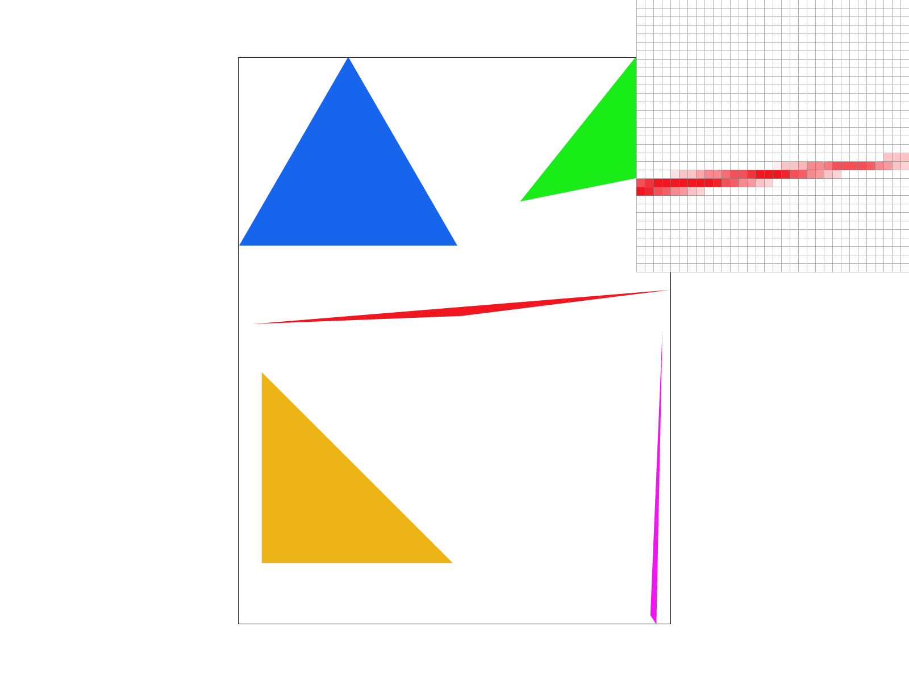
- These results are observed because with a sample rate of 1, we are only sampling per pixel, while with a sample rate of 4 we are taking 2 by 2 samples in each pixel, and with a sample rate of 16 we are taking 4 by 4 samples in each pixel, therefore as shown in the images as we increase the N by N samples in each pixel and then average down the opacity of the colors fine tune because it is more precise by sampling more pixels within a pixel, providing a clearer image.
Task 3 (10 pts)
- Create an updated version of svg/transforms/robot.svg with cubeman doing something more interesting, like waving or running. Feel free to change his colors or proportions to suit your creativity. Save your svg file as my_robot.svg in your docs/ directory and show a png screenshot of your rendered drawing in your write-up. Explain what you were trying to do with cubeman in words.
Before:
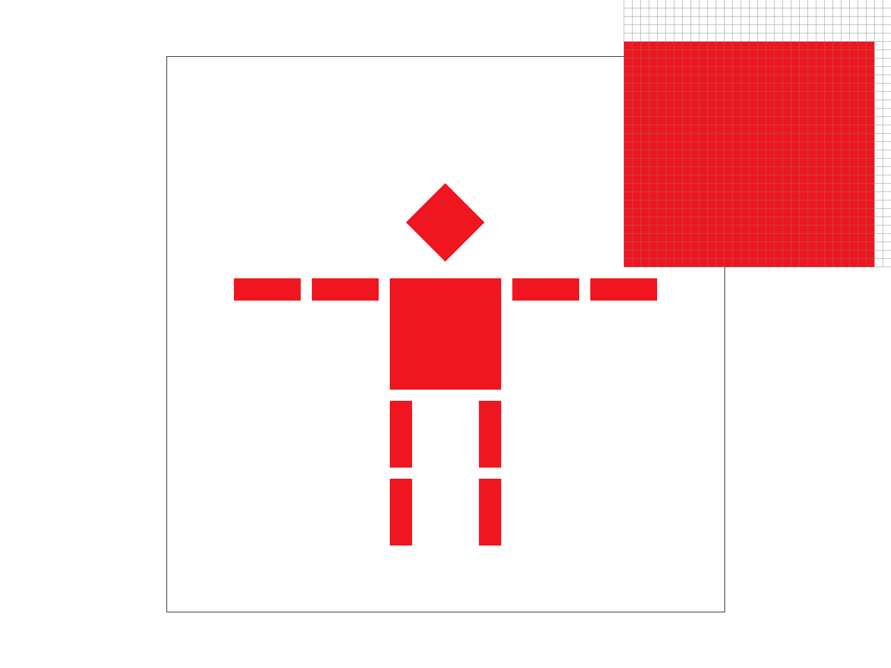
After: In this cubeman, I was trying to have the cubeman do a jumping jack. You can see the phases of the jumping jack in the order red, purple, and blue.
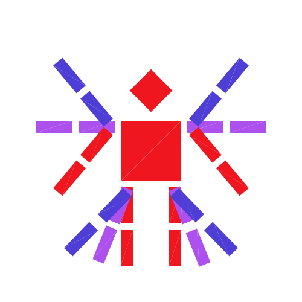
Task 4 (10 pts)
- Explain barycentric coordinates in your own words and use an image to aid you in your explanation. One idea is to use a svg file that plots a single triangle with one red, one green, and one blue vertex, which should produce a smoothly blended color triangle.
- Barycentric coordinates are scalar values that are used to represent a point located within a triangle, given by (alpha, beta, gamma) that sum to 1. Every point in the triangle has unique barycentric coordinates that are defined with respect to the three vertices of the triangle. These coordinates are used to interpolate textures, colors, and even find the mapping from one coordinate system to another.
- Based on the picture we can see the gradient of colors as we move away from the vertices, towards the center of the triangle. Each point within the triangle is a mixture of the values of each vertex, weighted according to the distance from each vertex. These distances are calculated in the form of ratios, with variables alpha, beta and gamma. Alpha is the perpendicular distance (if the line was extended to the opposite side) between a vertex and the point. Beta and gamma are calculated for the other two vertices respectively in a similar way.
- Show a png screenshot of svg/basic/test7.svg with default viewing parameters and sample rate 1. If you make any additional images with color gradients, include them.
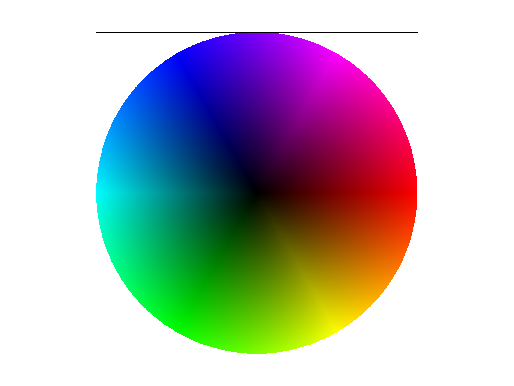
Task 5 (15 pts)
- Explain pixel sampling in your own words and describe how you implemented it to perform texture mapping. Briefly discuss the two different pixel sampling methods, nearest and bilinear.
- Pixel sampling is the process of mapping a point from space coordinates to texture coordinates. In simpler words, suppose we have an image in xy coordinates, and we want to overlay a texture (which is in yv coordinates) onto it, for each point on the image, we need to find the corresponding texture in uv coordinates. We can convert between these coordinate systems by finding the barycentric coordinates in one system and using alpha, beta and gamma to compute the coordinates of the point in the other system.
- Once we have found the corresponding points in the uv system, we can use the nearest neighbor or bilinear sampling algorithm to find the texture at that point.
- Nearest Neighbor sampling
- Nearest Neighbor assigns the texture Color of the nearest pixel coordinate to the point in discussion. For each point (u,v), we round down to the nearest pixel coordinates and obtain the texel value of that coordinate. We then assign it to our point (u,v).
- Bilinear Sampling/Interpolation
- Bilinear Interpolation is linear interpolation used multiple times on a 2D grid to obtain the weighted value of a point. In our case, we take four nearest neighbors to our point (u,v). These points are the four corners of the pixel, around (u,v).
- We first carry out linear interpolation on the top left and top right coordinates, using the lerp functions as a helper for it. The formula is given by (alpha * top_left) + ((1 - alpha) * top_right), where alpha is the horizontal distance, aka weight, between the top left pixel and our point.
- We then carry out the same formula for the bottom left and right points.
- Once we have these values, we interpolate it vertically, and get the weights of the vertical distance. The final value computed is the texel color that we would like to obtain.
- Check out the svg files in the svg/texmap/ directory. Use the pixel inspector to find a good example of where bilinear sampling clearly defeats nearest sampling. Show and compare four png screenshots using nearest sampling at 1 sample per pixel, nearest sampling at 16 samples per pixel, bilinear sampling at 1 sample per pixel, and bilinear sampling at 16 samples per pixel.
- Nearest Sampling at 1 sample per pixel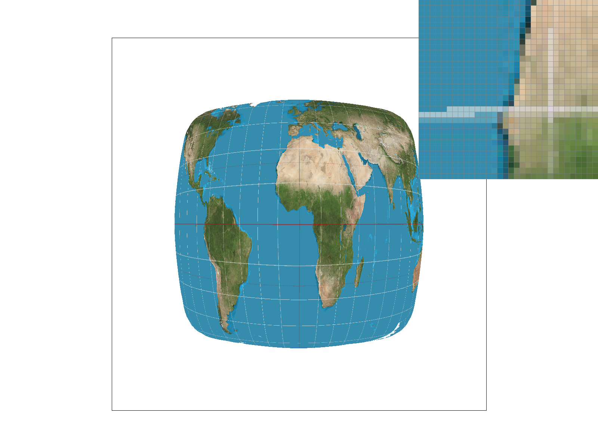
- Nearest Sampling at 16 samples per pixel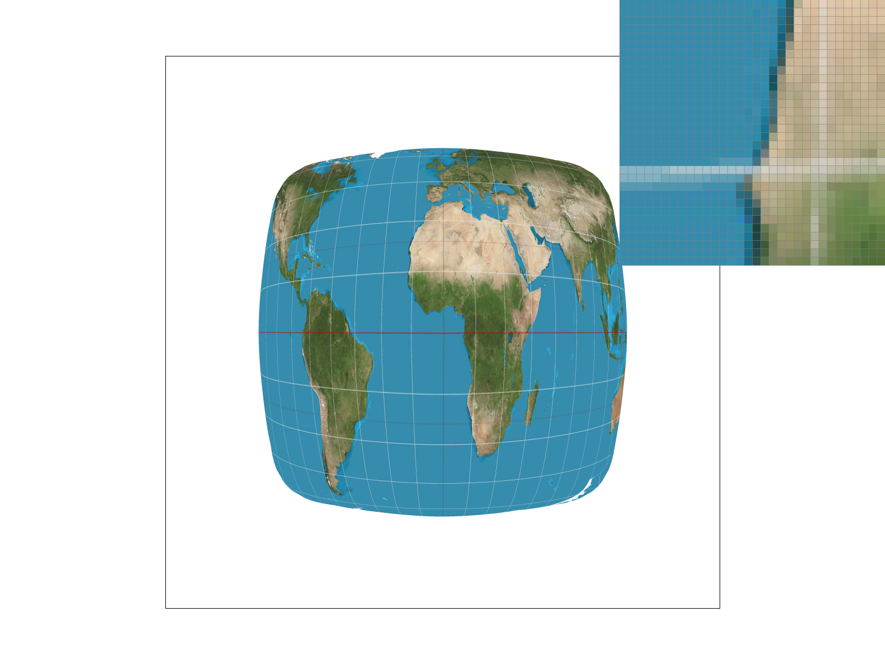
- Bilinear Sampling at 1 sample per pixel
- Bilinear Sampling at 16 sampler per pixel
- Upon observation with the pixel inspector, we think that both the world map images look significantly better with bilinear sampling. The reason for this is that both these images have longitudes and latitudes drawn which are fine lines. Nearest sampling loses information and the lines are not drawn entirely and clearly.However, since bilinear sampling takes into account multiple pixels, it is able to retain more of the fine white lines. In particular, we think that test1.svg does the best job due to the presence of other fine details as well. There will be a large difference between nearest sampling and bilinear sampling in the case of sharp details, and finer granularity, since nearest sampling will sample the nearest pixel, while bilinear will interpolate providing a more precise and detail oriented result.
- The differences between bilinear and nearest neighbor at a rate of 1 per pixel have already been discussed above. As the rate per pixel increases to 16, the image gets significantly more clear. The fine white lines become more well defined and the land textures are more clear as well as compared to images with rate 1 per pixel. However, when the images are supersampled with rate 16 per pixel, the difference between the two methods of sampling diminishes and both the images look very similar to each other.
- Comment on the relative differences. Discuss when there will be a large difference between the two methods and why.
- The differences between the two methods is that bilinear sampling uses an average of multiple points. Therefore, if the image has a gradient, it will be better captured using bilinear sampling over nearest neighbor. This large difference is because bilinear uses weighted averages, so a point closer to the center of a pixel will be textured more similarly to that pixel whereas a point far away from the center of a pixel will hold less similarities. On the other hand, in nearest neighbors, all the points close to the pixel will look exactly like that pixel. This causes some details to disappear.
Task 6 (25 pts)
- Explain level sampling in your own words and describe how you implemented it for texture mapping.
- Level sampling can be done in two ways. Level sampling is mainly done when we are changing the resolution of the image and we would like to get the best texture for that particular resolution by mapping it to the nearest texture map. Multiple texture maps are stored in advance at different resolution levels. This saves computation time since we only need to compute each level once, and then use interpolation to obtain the texture for our actual image. Mipmap is a single downsized version of the original texture, at a certain resolution. This concept is used to store the different levels of resolution which are then used for level sampling.
- Nearest Level
- Nearest level is one way to do level sampling. In this method, we find the nearest level to the current resolution of the given pixel. This can be done by rounding off to the nearest level found in the mipmap (more about this in the explanation of the get_level function). The texture of the associated pixel at that computed level is then used.
- Linear sampling method uses interpolation to get the texture resolution for the given point. In this case we find the mipmap level right above the point (by round up) and the mipmap level right below the point (by rounding down) and then conduct linear interpolation by finding the weights and taking the weighted average of the two levels.
- The implementation of this task can be divided into three sub tasks
- In the first part we iterated through each pixel in the image and recorded the xy coordinates, and the texture coordinates of neighboring screen samples along the x axis and the y axis. Then, we found the barycentic coordinates of these three points, (x, y), (x+1, y) and (x, y+1). Once we used barycentric cordinates to compute the uv locations of the three points, we moved onto the second part.
- The second part uses these three points to find the mipmap level. We did this by finding the length, L, using this formula
L = max(sqrt((du/dx)^2 + (dv/dx)^2), sqrt((du/dy)^2 + (dv/dy)^2))
And then finding the mipmap level, D, using this formula
D = log2 L
Another important aspect of this step is that when we calculate the partial derivatives, or the change in du and dv, we must multiply the results by the width and height to scale it according to the resolution of the image of the corresponding level.
- The last part of the task deals with getting the texture of the pixel based on the pixel sampling method and the level sampling method. Pixel sampling is done based on one of the two methods explained in task 5 and level sampling is done based on one of the two methods described above in task 6.
- You can now adjust your sampling technique by selecting pixel sampling, level sampling, or the number of samples per pixel. Describe the tradeoffs between speed, memory usage, and antialiasing power between the three various techniques.
- Pixel sampling refers to the method of obtaining the texture for a point.
- Overall, in terms of speed, level sampling is a lot faster than pixel sampling because level sampling is precomputed with the mipmap, while pixel sampling is computed on the spot using RAM. Thus for that reason also, memory usage is better for pixel sampling than level sampling.
- In terms of anti-aliasing power, level sampling is better than pixel sampling for super fine details, or super far in distance details. Both have great anti-aliasing, for example with pixel sampling as you increase the sample rate, the anti-aliasing improves, however for level sampling as the calculation becomes increasingly complex it can negatively lead to an over blur effect.
- To be more specific, with pixel sampling, we can use bilinear sampling or nearest neighbor sampling. Bilinear sampling takes more time than the nearest neighbor sampling. However it is more accurate than the nearest neighbor and takes care of fine details since we use interpolation. Both sampling methods take the same amount of time.
- Level sampling is similar such that the nearest level is executed faster. In terms of memory, using mipmap precomputes all the levels and stores them. Therefore, whether we use nearest level or linear sampling, the memory space taken is the same.
- Lastly, the number of samples per pixel can be defined by the supersampling rate. However it is significantly slower depending on the sample size and requires more space since the buffer size is larger to account for more sub pixels. It also reduces the antialiasing power and makes the image more clear and accurate.
- Using a png file you find yourself, show us four versions of the image, using the combinations of L_ZERO and P_NEAREST, L_ZERO and P_LINEAR, L_NEAREST and P_NEAREST, as well as L_NEAREST and P_LINEAR.
- To use your own png, make a copy of one of the existing svg files in svg/texmap/ (or create your own modelled after one of the provided svg files). Then, near the top of the file, change the texture filename to point to your own png. From there, you can run ./draw and pass in that svg file to render it and then save a screenshot of your results.
- Note: Choose a png that showcases the different sampling effects well. You may also want to zoom in/out, use the pixel inspector, etc. to demonstrate the differences.
- L_ZERO and P_NEAREST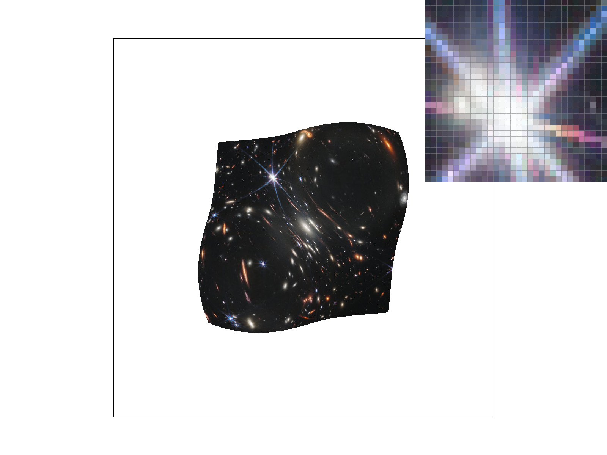
- L_ZERO and P_LINEAR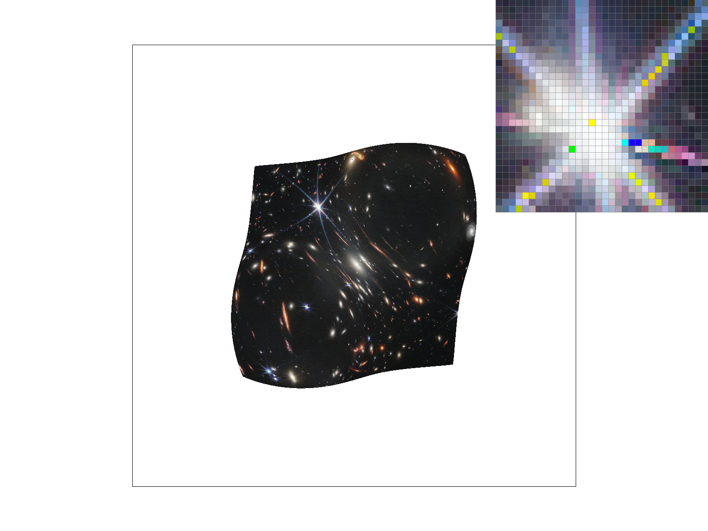
- L_NEAREST and P_NEAREST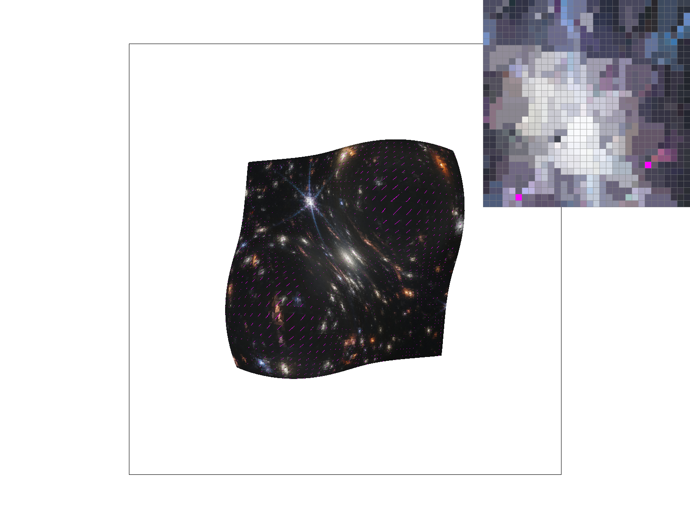
- L_NEAREST and P_LINEAR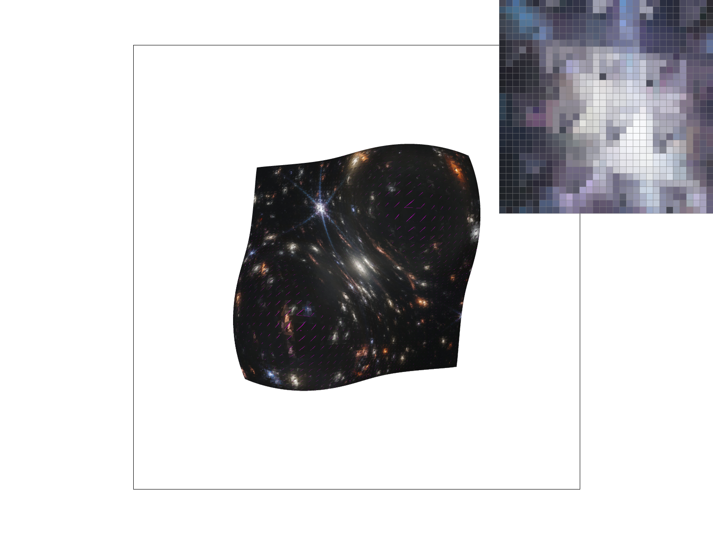